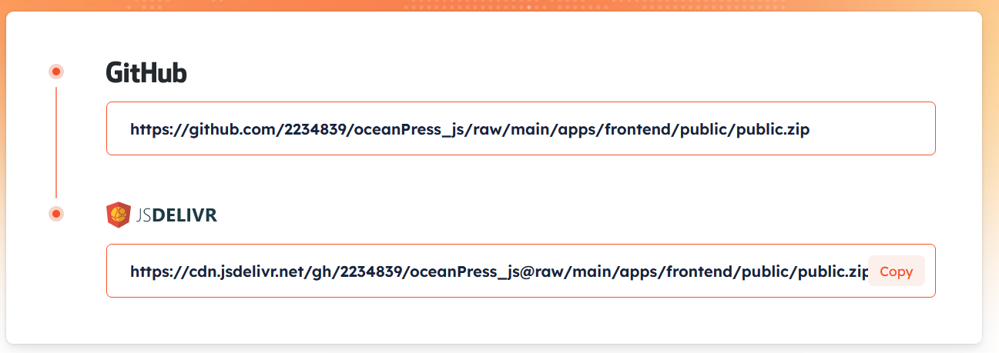
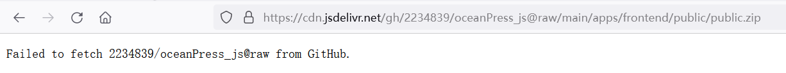
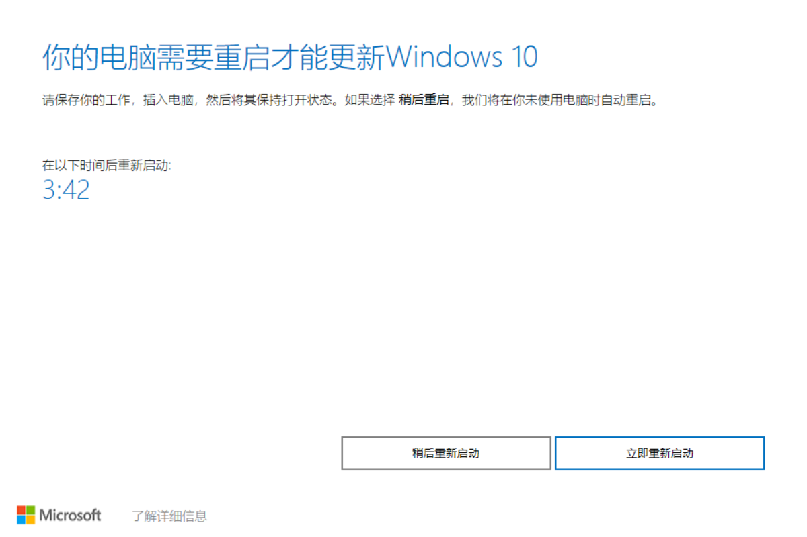

jsdelivr 无法获取 github 上的文件
我以为官网生成的链接一定是正确的，但 raw 的链接显然它没有做处理


Failed to fetch 2234839/oceanPress_js@raw from GitHub.
因为我只用了oss来存储，数据库用的是sqlite所以直接将数据库文件复制过去，然后将一些头像等文件弄过去之后就ok了
Windows 10更新助手在您的设备上下载并安装功能更新。 功能更新，例如 Windows 10 版本 1909（又称作 Windows 10 2019 年 11 月更新）提供新功能，并帮助保持系统安全。
下载更新助手
后，你将自动获得这些更新。
